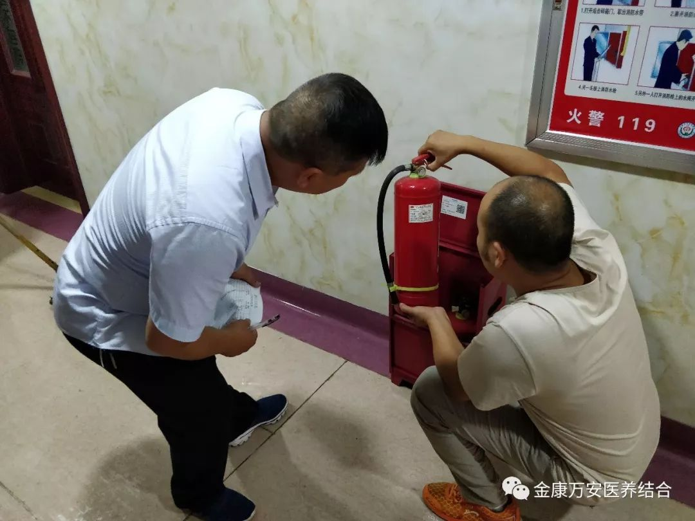
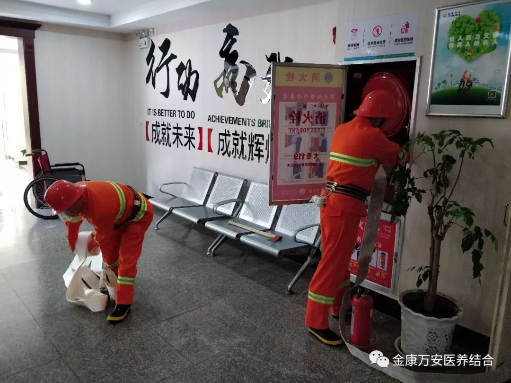
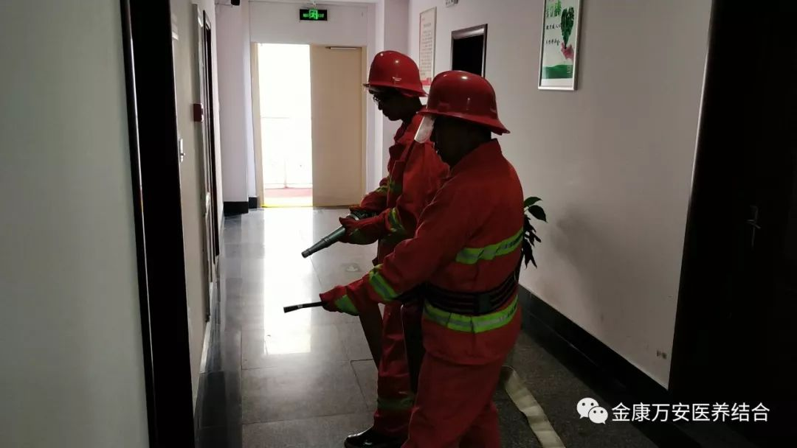
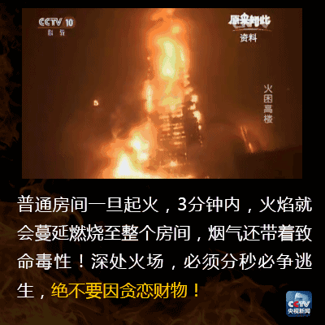
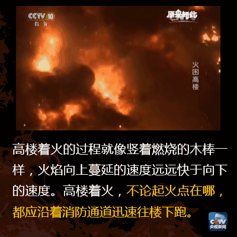
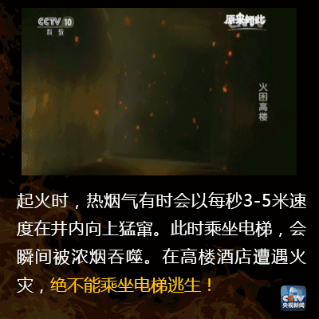
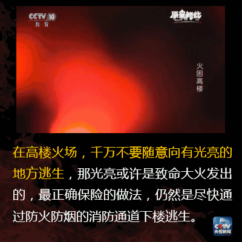

中新网 据台湾《中时电子报》报道,台湾新北市新庄台北医院8月13日凌晨发生火灾,至12时为止,已知9死11重伤,何以造成如此重大伤亡?新北市消防局长黄德清直指:“医院有延误通报情形”“疏散过程,护理人员没有立即把起火房间的门关上”。
在此次事件发生之后，漯河万安医院、万安老年公寓院领导高度重视，迅速行动，第一时间安排人员对全院消防设施及灭火器材进行排查，确保老人、患者、医务人员及财物的安全，防患于未然。
组织医护人员手捂口鼻沿疏散楼梯有序疏散
 院长王卫峰强调：全院上下一定要重视安全生产工作，把消防安全作为一项重要、长期的工作长抓不懈，加强消防设施的管理和检查力度，防患于未然，努力打造让老人、患者放心的平安医院。
听到火灾警报时应立即行动，马上开始疏散，无论火灾警报是真是假，不要迟疑，不要贪恋财物。火灾的发展是以分秒来计的，如果你等到确认火灾发生时，耽搁的时间也许就会危及你的生命。疏散的同时无论是否有其他人员报警，你都要拨通报警电话（避免大家都有同样的想法而延误报警）。
逃生时要判明火势大小，火灾处于初起阶段时，要利用就近的疏散楼梯进行疏散。如果火灾已呈发展趋势，应放弃穿过火场的念头，因为火场温度可达几百度，千万不要盲目行动，要退守房间，关闭房门，封堵缝隙，泼水降温，延缓烟火进入房间，设法逃生或等待救援。
疏散时应走疏散楼梯，高层建筑都设有封闭楼梯间或防烟楼梯间，楼梯间内相对安全，进入楼梯间后要顺手关闭楼梯间的防火门，避免烟火进入，为其他人员疏散创造条件。不要乘坐电梯，电梯井是火灾蔓延的途径，并且一旦停电，你将会被困在电梯中，使将自己陷入危险境地。
火灾产生的烟气是向上蔓延的，蔓延速度可以达到每秒3～5米，如果向上疏散，你的速度是赶不上烟气蔓延的速度的。美国的一起高层火灾，当明火蔓延到5层时，21层已经有人因为吸入有毒烟气而丧生，所以应沿疏散标志指示方向尽可能向下疏散。火场中威胁人身安全的不仅是明火，最主要的是有毒的烟气和高温，吸入一口有毒浓烟可让你感觉迷糊，吸入两口就会丧失意识，而达到60℃的烟气，只要吸入一口，就会像呛水一样导致死亡，所以疏散中一定要避免吸入有毒和高温烟气，可以将衣物和头发淋湿，尽量不要裸露皮肤，使用湿毛巾捂住口鼻，采取较低姿势以贴近地面，低处的新鲜空气利于逃生。
人们总是向着有光亮的方向逃生。但是，这时火场中，电源多半已被切断或已短路跳闸，光亮之地正是火魔肆虐之处。疏散时应先用手背（因为手背对温度比较敏感，而且一旦受伤不会影响手的使用）试一下门板，如果门板已热，说明火或高温的烟气已经到达门外，此时绝对不能将门打开，因为室内外压差，一旦开门，不仅烟火会进入房间，而且很难再将门关上。这时要封堵房门，躲避到靠近主干道房间（有利于消防员最先对你施救），这个房间必须有窗而且没有防盗网（高层建筑即使是消防员破拆防盗网也是很困难的），不可躲避到无窗的卫生间，利用鲜艳色衣物和手电等呼救，等待救援。不要盲目大声呼喊，这样不仅会消耗体力，而且会吸入有毒烟气。
所在楼层超过3层时，不要轻易跳楼。事实证明，超过3层跳楼，生还的几率很小，可利用床单被罩等结成绳索，拴在固定家具上，进行逃生。如果身上着火，就地打滚，或用干粉灭火器灭火，也可用衣物覆盖窒息灭火，不可直接用水或二氧化碳灭火器灭火，它们会让着火的身体肌肉发生爆裂，加重对身体的伤害。如果房间内有自动喷水灭火设施，可以打破喷头，延缓火灾的蔓延。在等待救援或疏散的时候，可以使用手机等及时通报你所在的位置，有利于消防员搜救。